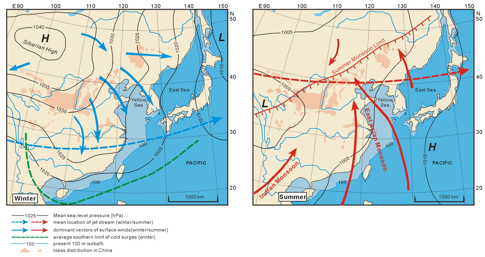
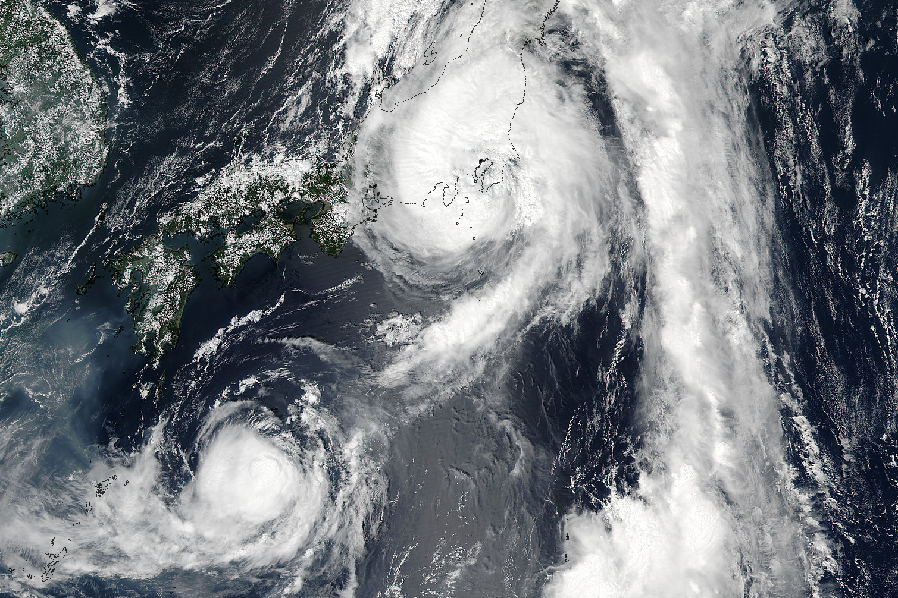
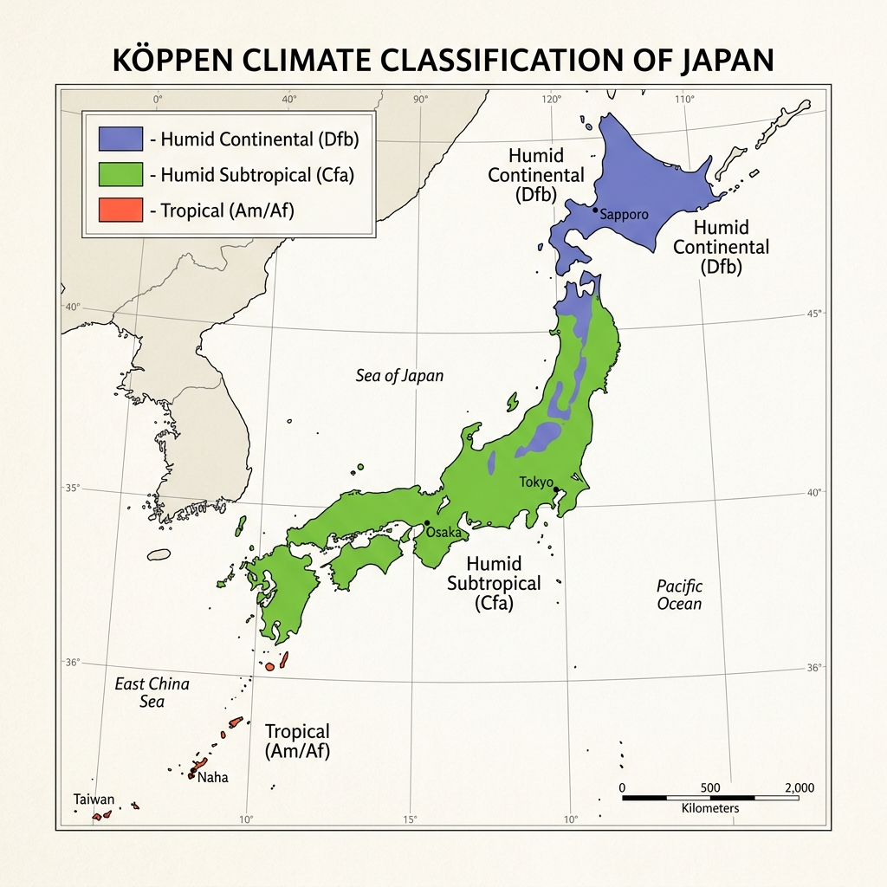
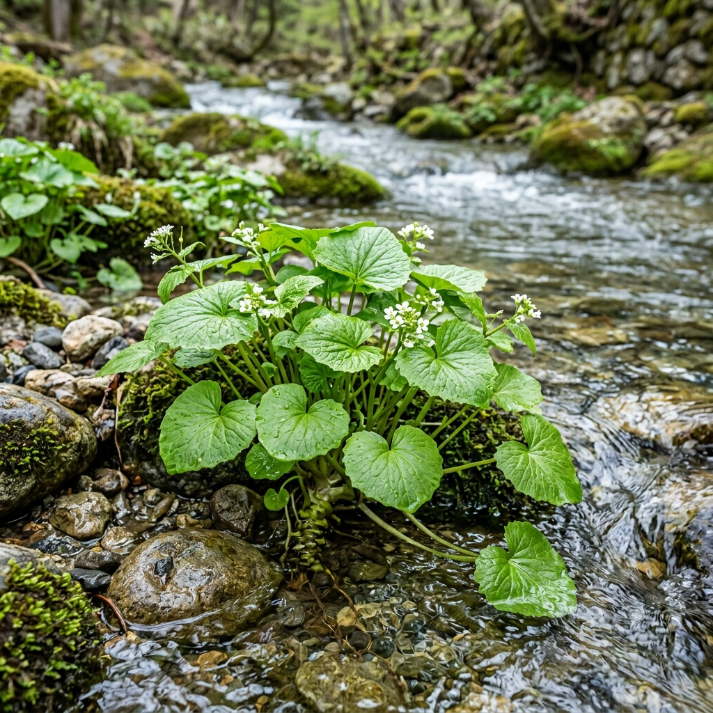
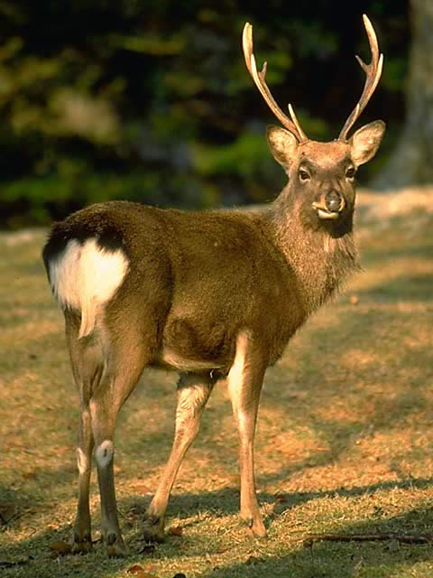

Global Position and Weather Patterns
How Japan's Location Shapes Its Weather
Japan is located on the eastern side of Asia and is surrounded by the Pacific Ocean and the Sea of Japan. Because of its location, the country is affected by different wind systems throughout the year. One of the most important is the Westerlies, which move weather systems from west to east across Japan.
While researching this topic, I learned that the East Asian Monsoon has a major impact on Japan's climate. In winter, cold air comes from Siberia and picks up moisture as it crosses the Sea of Japan. This is one reason why western Japan receives so much snow. In summer, warm and humid air from the Pacific Ocean brings higher temperatures and frequent rainfall.
Japan also experiences a rainy season called Tsuyu and a typhoon season later in the year. Because of these weather patterns, many parts of Japan receive a large amount of precipitation every year. I found it interesting that Japan's location between the Asian continent and the Pacific Ocean plays such a big role in shaping its climate.

Severe Weather Systems
Major Severe Weather Events in Japan
Japan experiences several types of severe weather every year. The most common are typhoons, floods, landslides, and winter snowstorms. Because Japan is surrounded by ocean and has many mountains, these events can have a big impact on communities.
One of the most serious weather hazards is typhoons. These storms usually form over the Pacific Ocean and often reach Japan during late summer and early fall. For example, Typhoon Hagibis (2019) caused major flooding and damage across eastern Japan.
Heavy rainfall is also common during the Tsuyu rainy season. Combined with steep mountains and short rivers, this can lead to flooding and landslides. In winter, cold air from Siberia brings heavy snowfall to many areas along the Sea of Japan coast.

Climate Classification

The Köppen-Geiger Climate Zones
Japan has several climate zones because it stretches from the cool north to the warm south. According to the Köppen Climate Classification, most of the country has either a humid continental or humid subtropical climate.
Hokkaido experiences colder winters with heavy snowfall, while much of Honshu, Shikoku, and Kyushu have warmer temperatures and humid summers. In the far south, Okinawa has a tropical climate with warm weather throughout the year.
While researching this topic, I found it interesting that people can experience very different climates depending on where they live in Japan. The climate also affects agriculture, tourism, and daily life across the country.
Sapporo Climate Profile (Dfb)
Located in northern Japan, Sapporo is characterized by a humid continental climate with severe, snowy winters. In winter, cold winds from Siberia pick up moisture over the Sea of Japan, dumping feet of snow. Summers are warm and lack the humidity found in southern cities, making it a popular destination.
Tokyo Climate Profile (Cfa)
As a representative of the humid subtropical zone, Tokyo experiences four distinct seasons. Summers are hot, sticky, and wet, influenced by maritime tropical air. Winters are cool and dry, with clear skies due to the rain-shadow effect created by the central mountain ranges. High rain spikes occur in early summer (Tsuyu front) and autumn (typhoons).
Naha Climate Profile (Am)
Representing the tropical monsoon climate, Naha in Okinawa enjoys hot, humid conditions year-round, with average winter temperatures staying above 17°C. Precipitation is extremely heavy and spikes during the early summer monsoonal rain season and late summer typhoon periods. Subtropical mangroves and coral reefs thrive here.
Forest Biomes & Society
Different Ecosystems Across Japan
Japan has many different ecosystems because the country stretches a long distance from north to south. In Hokkaido, there are cold conifer forests and snowy landscapes. In central Japan, temperate forests with maple and beech trees are common. Farther south, Okinawa has subtropical forests with palm trees and mangroves.
While researching this topic, I learned that these ecosystems influence the way people live in different parts of Japan. For example, northern regions are known for winter activities and dairy farming, while southern islands have a warmer climate and different agricultural products.
Even though the environments are different, I think these biomes help unite Japanese society more than divide it. Many traditions, foods, and seasonal celebrations are connected to nature, and people across the country enjoy activities such as cherry blossom viewing in spring and autumn leaf viewing in the fall.
The Four Seasons (Shiki)
The changing of the four distinct seasons is a fundamental aspect of Japanese culture, aesthetics, and poetry.
Native Plants
Resources, Food, and Medicine
While researching native plants in Japan, I learned that many of them have been used for food, medicine, and building materials for centuries. One example is bamboo, which is used for tools, crafts, and construction. Young bamboo shoots are also eaten in many traditional dishes.
I also found that plants such as wasabi and sansho have been important in Japanese cooking and traditional medicine. Japanese cedar, known as sugi, is another valuable plant because its wood is commonly used to build temples, shrines, and traditional houses.
Poisonous or Dangerous Plants
Not all native plants are harmless. I learned that torikabuto (Japanese monkshood) is one of the most poisonous plants found in Japan. It contains a strong toxin and can be dangerous if mistaken for an edible wild plant.
Another interesting example is higanbana (red spider lily). Although it is beautiful and commonly seen near rice fields, its bulbs are poisonous. Learning about these plants showed me how nature can provide useful resources while also requiring people to be careful.

Native Animals
Resources, Food, and Livelihoods
While researching native animals in Japan, I learned that some species have played an important role in daily life and local traditions. One example is the sika deer, which has historically been used as a source of food and materials. Today, deer are still important in some rural areas and are carefully managed to protect local ecosystems.
I also found it interesting that the Japanese honeybee is known for producing honey and helping pollinate plants. Many native animals contribute to agriculture and natural environments, making them valuable resources for local communities.
Dangerous or Poisonous Animals
Not all native animals are harmless. One of the most well-known dangerous species is the Asian giant hornet, which has a very painful sting and can be dangerous when disturbed. Japan is also home to several venomous snakes, including the mamushi and the habu, which are found in different parts of the country.
While researching this topic, I learned that bear encounters have also become more common in some rural areas. These examples show how Japan's wildlife can be both beneficial and potentially dangerous depending on the situation.
